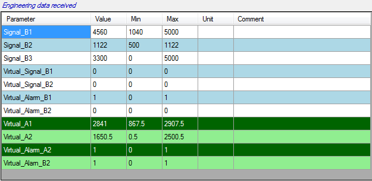

If one or more virtual channels libraries are loaded and data received are containing signal used in those virtual channels, virtual channels are automatically computed and their values are shown into the grid with green background color.

Created with the Personal Edition of HelpNDoc: iPhone web sites made easy